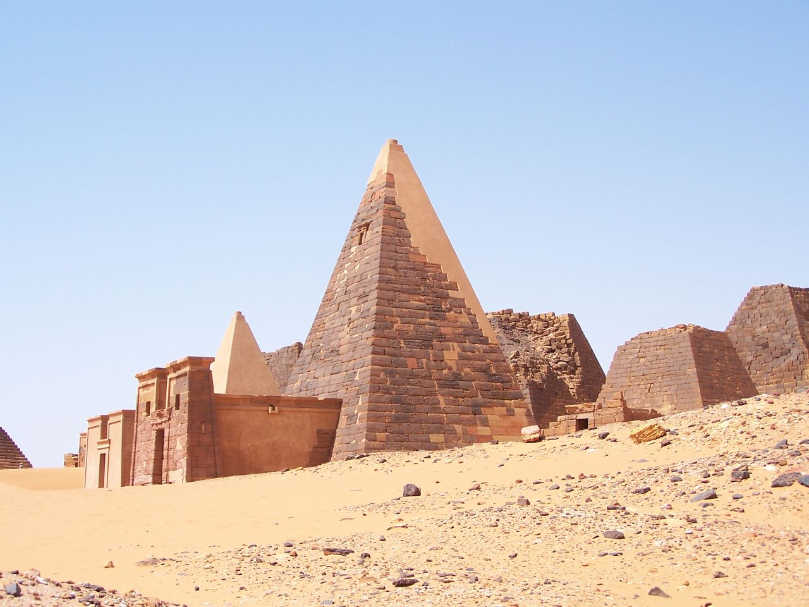

Official Site Dossier & Maps · Kerma, Napata and Meroë: Cities of Kush ↗
Primary institutional boundary map, conservation reporting, and site gazetteer for Kerma, Napata and Meroë: Cities of Kush.
Deep dives / Africa & Middle East
Upstream of Egypt’s First Cataract, the Middle Nile Valley hosted a succession of powerful indigenous African kingdoms grouped historically as Kush. Archaeology across Kerma, the Dongola Reach, Napata, Dangeil, and the Royal City of Meroë reveals monumental mud-brick shrines, royal pyramids, alphabetic Meroitic writing, and massive iron-smelting industries.
Archaeological sequences in northern Sudan from Classic Kerma (2500–1500 BCE) through Napatan (9th–4th c. BCE) and Meroitic Kush (c. 300 BCE–350 CE).

Middle Nile cataracts and Shendi/Dongola Reach research centers in northern Sudan.
c. 2500–1500 BCE
Early Kushite capital combining the towering mud-brick Western Deffufa temple with royal tumuli ringed by hundreds of cattle bucrania. [1] [2] [3] [14]
19.60°, 30.41°Middle Kerma period
Newly discovered provincial Kerman settlement illuminating administrative and pastoral networks south of the Third Cataract. [4]
18.42°, 30.72°c. 850–300 BCE
Sacred sandstone mesa and Napatan capital behind the 25th Dynasty Kushite kings who ruled both Nubia and Egypt. [6] [7] [15]
18.54°, 31.83°3rd c. BCE–3rd c. CE
Kushite city featuring a monumental Amun temple and stratified crucible workshops for tin-bronze casting. [8]
18.14°, 33.97°c. 300 BCE–350 CE
Southern capital of Kush renowned for royal pyramids, stone temples, Meroitic inscriptions, and extensive iron-smelting slag mounds. [9] [10] [11] [16]
16.94°, 33.74°Emerging around 2500 BCE independently of Old Kingdom Egypt, Kerma controlled floodplains and desert gold routes around the Third Cataract. At the heart of its urban core stood the solid mud-brick Western Deffufa, flanked by specialized copper/bronze foundries and granaries while provincial towns such as Letti anchored the southern Dongola Reach. [1] [4] [5]
Kerma’s Eastern Cemetery traces the rise of warrior-archer elites and sacred kingship crowned with colossal earthen tumuli accompanied by hundreds of sacrificed cattle skulls—reflecting pastoral ideologies shared across northeastern Africa. [2] [3]
| Phase / Capital | Chronology | Key Archaeology | Sources |
|---|---|---|---|
| Kerma & Letti Basin | c. 2500–1500 BCE | Western Deffufa mud-brick temple, cattle-bucrania tumuli, tin-bronze | [1] [4] |
| Napata (Jebel Barkal, Kurru, Nuri) | c. 850–300 BCE | 25th Dynasty Kushite revival, royal pyramids, Amun precinct | [6] [7] |
| Meroë & Dangeil | c. 300 BCE–350 CE | Meroitic script, Dangeil bronze crucibles, 97-date iron slag chronology | [9] [8] |
Following Egypt’s New Kingdom withdrawal, local Nubian communities preserved resilient settlements before Napatan rulers united Kush and Egypt in the eighth century BCE. When the royal center later shifted southward to Meroë, Kushite cities developed an indigenous alphabet, cast tin-bronze at Dangeil, and operated long-lived bloomery iron-smelting workshops fueled sustainably by managed Nile Acacia timber. [7] [13] [12]
Published excavations and remote-sensing surveys across Kerma (Deffufa & Eastern Cemetery), Letti Basin (Southern Kerma), Jebel Barkal (Napata) distinguish monumental construction events from long centuries of everyday craft, agricultural provisioning, and ritual reuse—relying on radiocarbon series, ceramic seriation, epigraphy, and geoarchaeological sediment cores rather than unverified royal annals alone. [1]
Exchange connections preserved across metallurgical ores, timber/stone sourcing, exotic prestige wares, and architectural styles demonstrate how each local horizon sat inside much broader continental corridors across africa. [2]
Ongoing conservation balancing living community custodianship, climate/erosion stressors, and non-invasive geophysical mapping continues to refine older 19th- and 20th-century excavation hypotheses. Map coordinates pinpoint documented archaeological properties and research zones rather than rigid ancient territorial borders. [15] [1]
Open the source maps for their original detail, legends and dates. Their coverage and reproduction terms belong to the issuing institution.
Primary institutional boundary map, conservation reporting, and site gazetteer for Kerma, Napata and Meroë: Cities of Kush.
Open this era on global Explore ↗ Open Africa & Middle East atlas ↗ Climate, sea level & ice-sheet context ↗
Sources checked and linked above; geological and historical dating methods follow the primary papers.